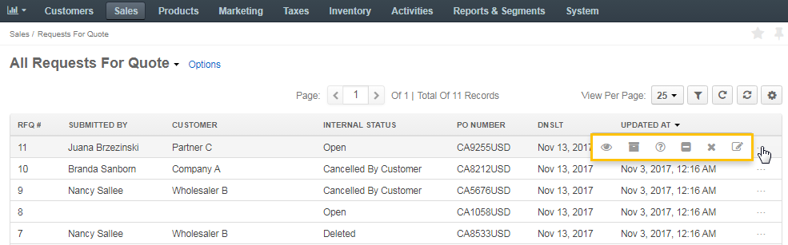

View Requests for Quote Summary¶
To view all the Requests for Quotes, navigate to Sales > Requests for Quote in the main menu.

Here, you can perform the following actions:
View per page — In the list, select the number of items to be displayed per page. Available options are 10, 25, 50, and 100.
Filter — Click to show filters per column. You can limit displayed items to those that match filtering criteria provided.
Sort — To sort the items by the values in a particular column (e.g. RFQ#, Submitted by, etc.), click the respective column header. When sorting is ascending, an upward arrow appears next to the column name. When sorting is descending, a downward arrow appears.
Refresh — Click to reload the information about the items. If another user recently updated the item details, these changes are reflected upon the refresh.
Reset — Click to roll back the view per page, filters and columns configuration to the default values.
Manage columns — Open the Grid Settings by clicking to see the list of columns that organize the item details. To reorder the columns, click and hold the column name, then drag it to the new location. To show / hide a column, select / clear the Show check box next to it.

Choose the required RFQ in the list, hover over the More Options menu and perform one of the following:
- Click to View the details of the request for quote.
- Click to Mark the RFQ as Processed.
- Click to communicate to the customer and Request More Information regarding the RFQ.
- Click to Decline the RFQ in view of irrelevance.
- Click to Delete the RFQ.
- Click to Edit the RFQ upon request or necessity.